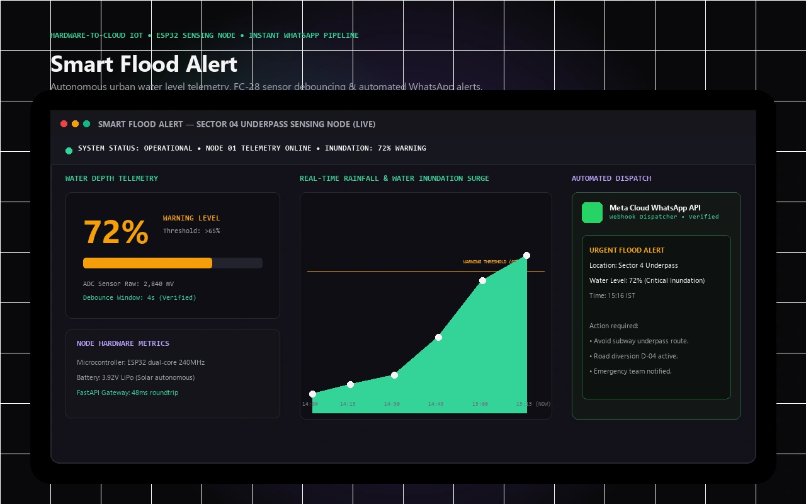

Embedded IoT, Cloud Telemetry
Smart Flood Alert
IoT flood telemetry with ESP32 edge probes and WhatsApp alerts.
“Emergency notifications must meet people where they are: immediately, with zero friction.”
Hardware
ESP32 NodeMCU, FC-28
Sampling
10 Hz, 4000ms debounce